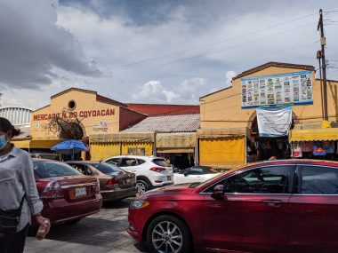
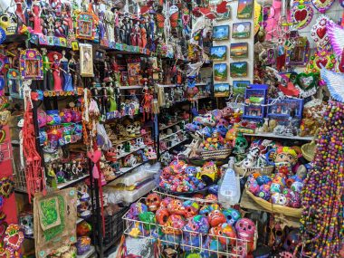
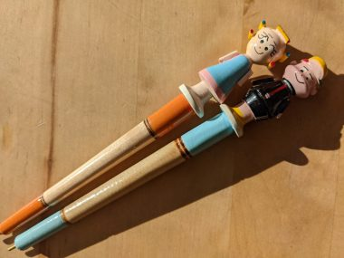
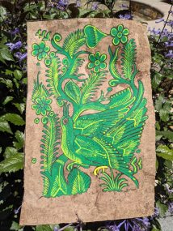
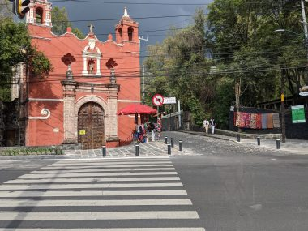

メキシコシティでノマドワーク～週末はフリーダカーロ美術館のあるコヨアカンで観光を楽しむ～
週末は、メキシコシティーの南側にあるコヨアカンへuberで車を手配して行った。
コヨアカン地区は、青の家と呼ばれるかつてフリーダカーロが住んだ家が有名。今は美術館として運営されており、観光サイトとしては小規模ながら近年人気の観光スポットとなり、もはや事前のオンラインでのチケット購入がが必須となった。それでもかなり前から予約しなければいけないそうで、観光バスのガイドさんは、私たちがその日訪れたことを告げたら驚いていた。コロナ禍で海外からの観光客が減っていたせいで予約ができたのは幸運だった。
建物の中で撮影したければ事前申請で入り口でお金を払う。
カラフルな服が展示されたフリーダファッションや家具調度類はみていて楽しいが、展示されたフリーダの身の回り品からは事故にあって以降生涯続くことになったからだの痛みが生々しく伝わってくるようだった。
フリーダカーロに関する知識といえば、サザビーズで４０億円で落札された自画像の作品などが有名な、眉毛のつながった女流画家という程度だったが、夫のディエゴとの関係も含め壮絶な人生を歩んだひとだったということが十分に理解できた。
無料で撮影できるのは庭部分のみ。
庭は独特の世界観が表現された不思議な空間が広がっていた。
↓フリーダカーロが愛した噴水。
ところどころにぽつんぽつんと置かれた石の置物が並べられる階段状のピラミッド。夫のディエゴが作らせたらしいが、庭にピラミッドを作るという発想はなかなかおもいつかないよね。
コヨアカン地区は青の家以外にも見どころ満載で楽しい。
手工芸品の市場があったので寄ってみた。

ぎっしりと並べられたカラフルな手工芸品が並ぶ。

↓こんなかわいいボールペンも売っている。ちなみにこれは同じホテルに滞在していた知らないおじさんに、J次郎とい一緒にいるときに話しかけられ、もらったもの。

↓A4よりやや大きいサイズのハンドペインティングの絵。

コヨアカンの週末はセンテナリオ公園を中心にそれはそれは大変な賑わい。コヨアカンは2匹のコヨーテという意味で、公園の噴水は2匹のコヨーテが水で遊んでいるかのよう。この公園をぐるりと囲むようにしてレストランが並び、夕食はここで食べた。
この広場からはコヨアカンの見どころを回る観光バスがでていて、乗ってみたら、楽しかった。
↓古い伝統的な建物が並ぶ地域にも連れて行ってくれた。
